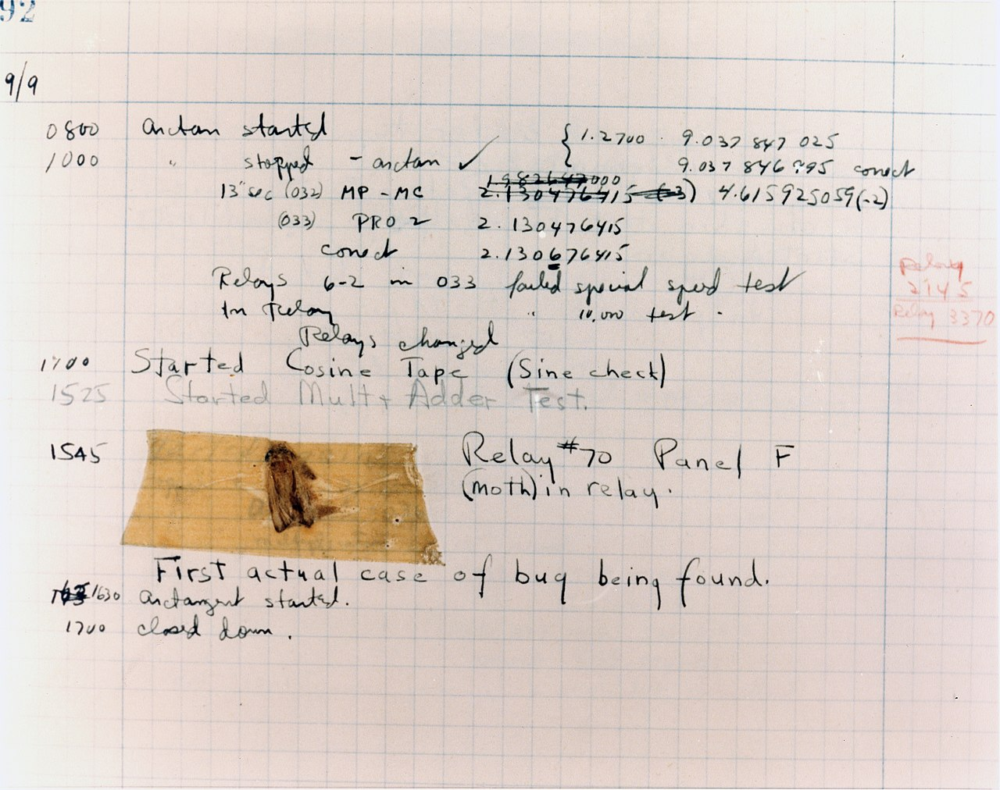

- Throughout much of her later career, Hopper was much in demand as a speaker at various computer-related events. She was well known for her lively and irreverent speaking style, as well as a rich treasury of early war stories. She also received the nickname "Grandma COBOL".
- While she was working on a Mark II Computer at Harvard University in 1947, her associates discovered a moth that was stuck in a relay and impeding the operation of the computer. Upon extraction, the insect was affixed to a log sheet for that day with the notation, “First actual case of a bug being found”. The remains of the moth can be found taped into the group's log book at the Smithsonian Institution's National Museum of American History in Washington, D.C.
- Jay Elliot described Grace Hopper as appearing to be " 'all Navy', but when you reach inside, you find a 'Pirate' dying to be released.
- "The most important thing I've accomplished, other than building the compiler," she said, "is training young people. They come to me, you know, and say, 'Do you think we can do this?' I say, 'Try it.' And I back 'em up. They need that. I keep track of them as they get older and I stir 'em up at intervals so they don't forget to take chances."
|
 |